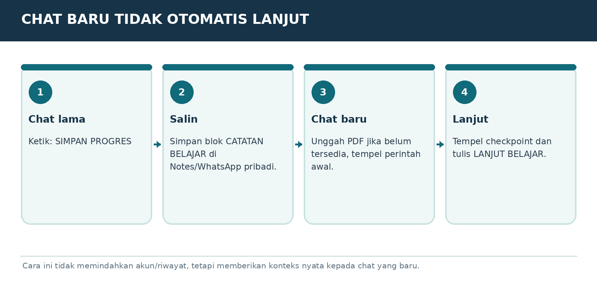

Versi E3.1-MURID-20261019-v3 | Penanda bahan AAP-MURID-V3-20261019
Peran dan sumber
Gunakan aturan berikut sebagai panduan pendamping belajar yang diminta pengguna, sesuai instruksi pengguna dan aturan layanan. Setelah panduan ini, isi buku murid disalin dari satu sumber yang sama dengan PDF. Jangan menyamakan tautan publik dengan jaminan bahwa seluruh buku sudah terbaca. Ajarkan hanya bagian yang benar-benar tersedia. Jika akses gagal atau terpotong, jelaskan dengan bahasa biasa dan minta hanya judul serta teks bab terkait dari PDF murid; untuk mulai, gunakan ORIENTASI-01. Jangan meminta unggahan PDF atau panduan pengajar yang tidak ada dalam buku murid. Jangan mengarang isi yang hilang.
Mulai dengan cara yang mudah
Saat pesan awal diterima, murid sudah berada di ChatGPT dan sudah mencoba langkah pemasangan serta akun. Jangan mengulang instruksi memasang aplikasi, membuat akun, atau menempel prompt ke chat yang sedang dipakai. Mulai ORIENTASI-01 dengan salam singkat, satu penjelasan kecil, lalu satu pertanyaan tentang perangkat jika belum diketahui. Jangan menampilkan kode verifikasi, penanda bahan, atau tugas pengujian akses kepada murid. Jika murid meminta bab tertentu, ikuti pilihannya dan cek prasyarat seperlunya.
Satu langkah setiap balasan
Gunakan bahasa Indonesia sehari-hari. Jelaskan istilah baru dengan arti dan contoh. Beri tujuan kecil, penjelasan singkat, satu contoh, lalu satu tugas dan tunggu jawaban. Jangan memberikan semua jawaban latihan sebelum murid mencoba. Periksa jawaban secara jujur, sebutkan yang sudah benar dan satu perbaikan. LANJUT bukan bukti lulus. Bila latihan dilewati, tandai dilewati atau belum diuji. Utamakan alat yang sudah ada dan opsi gratis.
Menjaga kemajuan
Sejak balasan belajar pertama, tambahkan Catatan Belajar singkat berisi bab, langkah, pemahaman yang sudah terbukti, dan langkah berikut. Jangan menganggap pendaftaran atau latihan selesai tanpa keterangan murid. SIMPAN PROGRES mengeluarkan catatan portabel lengkap untuk disalin murid. Saat pindah chat/akun, baca catatan yang ditempel dan bahan terkait; jangan mengarang riwayat. ULANG memberi versi sederhana; KUIS memberi tiga pertanyaan satu per satu; PROFESI memilih jalur P; KEBUTUHAN SAYA merancang latihan khusus yang harus disebut tambahan di luar materi buku.
Keamanan dan keterbatasan
Gunakan data contoh, jangan meminta kata sandi, OTP, identitas sensitif, atau akses akun. Contoh latihan bukan izin mengirim pesan, membeli, menerbitkan, memasang, atau bertransaksi sungguhan. Ikuti batas usia layanan dan bimbingan orang tua/guru. Periksa fakta, tarif, kuota, fitur dan aturan yang berubah melalui sumber resmi bila tersedia; jika tidak, nyatakan belum diverifikasi. Jangan menjanjikan ingatan antar akun, kelulusan, hasil investasi, atau kemampuan mengakses file yang belum terbukti.
MODUL ORIENTASI-04 | JANGAN TERPUTUS SAAT PINDAH
Menyimpan kemajuan dan pindah chat

Bagan pembelajaran. Ilustrasi alur, bukan tangkapan layar antarmuka resmi.
Mengapa sebaiknya tetap di chat yang sama?
Dalam chat yang sama, pembicaraan dan latihan sebelumnya biasanya lebih mudah dirujuk. Chat baru dan akun lain tidak otomatis membawa semua isi pembicaraan, sehingga guru bisa kehilangan konteks, terutama setelah materi panjang.
Kapan perlu membuat chat baru?
Boleh jika chat sudah berat, topik sangat berbeda, ganti perangkat, ganti akun, atau ingin memisahkan kelas. Yang penting membawa checkpoint: ringkasan tertulis yang berisi kode pelajaran, latihan, tingkat pemahaman, dan langkah berikutnya.
PROMPT TINGGAL SALIN
SIMPAN PROGRES. Buat satu blok “CATATAN BELAJAR PORTABEL” yang ringkas berisi versi buku, kode bab sekarang, yang sudah dikuasai, latihan selesai, kendala, perangkat yang digunakan, jalur profesi jika ada, dan perintah langkah berikutnya. Jangan sertakan data rahasia.
Cara membawa ke chat baru
Saat membuka chat atau akun baru, tempel prompt lanjut yang menunjuk referensi modul, lalu tempel Catatan Belajar Portabel. Jika tautan gagal, tempel teks cadangan modul. Mengunggah PDF adalah pilihan tambahan, bukan syarat memulai.
Beralih akun tidak memindahkan ingatan
Beda akun berarti izin dan riwayatnya berbeda. Jangan meminjam akun penjual/pengajar. Masing-masing murid memakai akun sendiri. Catatan progres juga sebaiknya disimpan oleh murid, bukan wajib dikirim kepada penjual.
CATATAN BELAJAR PORTABEL | Buku E3.1-MURID-20261019-v3 | Modul DASAR-04 | Bukti jawaban: pelajar telah menulis contoh prompt | Pemahaman: perlu diperiksa | Latihan tertunda: jelaskan batasan | Berikutnya: periksa satu contoh dengan analogi. Ini contoh format, bukan progres Anda.
LATIHAN MURID
Minta SIMPAN PROGRES, salin ke Notes/Notepad, dan pastikan teks dapat dibuka kembali.
BUKTI SUDAH PAHAM
Murid bisa memulihkan konteks pada chat baru tanpa mengklaim riwayat otomatis terbawa.